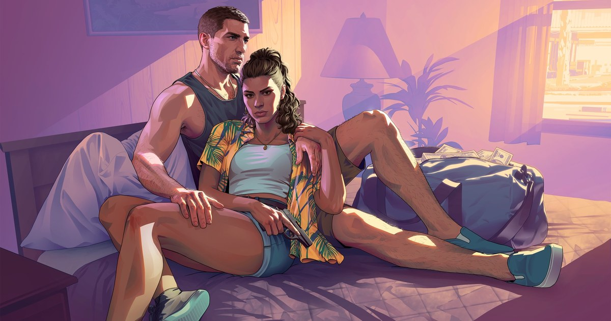

GTA 6 writer Alexa D'Agostino deletes her X account after harassment campaign over Lucia
Alexa D'Agostino, one of the writers behind GTA 6, deleted her X account after a wave of harassment targeting her over Lucia — including a claim about an old blog post that falls apart on a second look. The abuse has since spilled onto a different woman who shares her name.

Disclosure: this post contains affiliate links. I earn a commission on qualifying purchases.
One of the writers behind Grand Theft Auto 6 has deleted her X account after a wave of online harassment and misinformation, targeted at her over Lucia Caminos — the game's co-lead and the franchise's first female protagonist.
Alexa D'Agostino, who has thank-you credits on GTA 5, Red Dead Online and GTA Online, was one of the writers who worked on GTA 6. She had previously spoken publicly about the writing inspirations behind Lucia. After the game's launch on November 19, she was active on X, sharing videos of GTA 6 gameplay. Now the account is gone — and her old handle appears to have been taken over by a crypto enthusiast.
What the harassment is about
The people targeting D'Agostino dislike the inclusion of Lucia as a playable character, and blame her for the parts of GTA 6 they don't like. The posts being circulated criticise her for wanting Lucia to be a strong character — one who could stand alongside Arthur Morgan and Rockstar's other protagonists.
An X thread laying out why she was targeted cites her support of LGBTQ+ pride and posts that are critical of US President Donald Trump. It also claims she ran a blog that encouraged women to "manipulate and take advantage of men."
That claim is the part that falls apart. The blog post the thread points to gave women advice on how to handle meeting their boyfriend's friends: be themselves, let the friends lead the conversation, and ask their boyfriend what his friends are like before they meet them. That is the evidence. Video Games Chronicle, which reported the story, notes that many of the posts about D'Agostino are misogynistic and racist in nature.
The woman behind Lucia
D'Agostino spoke about writing Lucia before the game launched, and the character came from somewhere personal. She told Love Magazine she thought of the women she knows — her mother was an immigrant who grew up in Newark, New Jersey, close to Lucia's hometown of Liberty City.
"When it came to writing Lucia, I thought of the women I know," she said. "My mother was an immigrant who grew up in Newark, New Jersey, close to Lucia's hometown of Liberty City. I thought about the way she raised me: rowdy, kind, but not to take any shit. I related a lot to Lucia, and writing her came very naturally to me."
"When you are focusing on writing a fully realised person with their own wants, you're going to get something perfectly imperfect — with clichés, but also undeniably real. That's how you get a woman that can stand tall next to the likes of Arthur Morgan and Niko Bellic."
That quote is now being used to disparage her. It is, on its face, a writer explaining why a character works.
The abuse found a second target
After D'Agostino deleted her X account, much of the vitriol was instead sent to another woman who shares her name — someone with no connection to the game at all. That is what a harassment campaign does when its target logs off: it keeps going and finds the nearest name that matches.
This is not new, and the industry knows it
Incidents like this are nothing new in gaming. Tati Gabrielle, the star of Naughty Dog's Intergalactic: The Heretic Prophet, faced online harassment as soon as the game was revealed — and has since said Naughty Dog gave her training to prepare for it. Laura Bailey was harassed for playing Abby in The Last of Us Part 2.
The pattern is the same every time: a game gets big, a woman attached to it becomes a target, and the people doing it dress up a pile of misinformation as a critique of the game. GTA 6 is the biggest launch in entertainment history. Lucia is half of it. The writer who helped make her real had to leave social media a week after launch — and the claim used to justify it doesn't survive a single click.
Gear up: Razer — mice, keyboards, headsets and laptops.